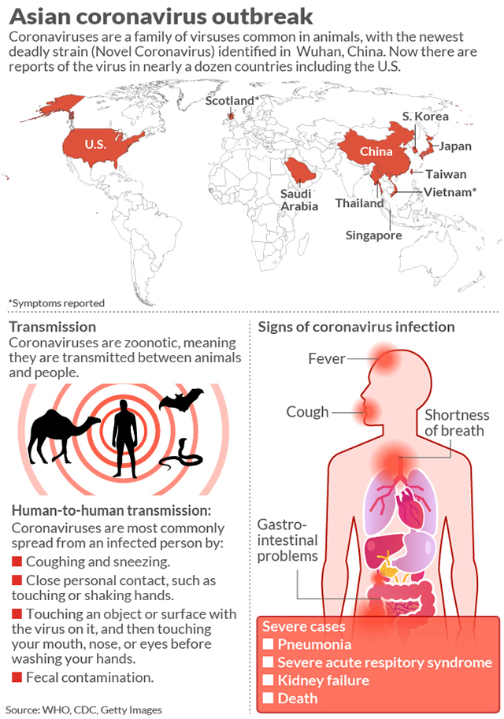

What is Coronavirus or COVID-19?
The COVID-19
Coronavirus disease 2019 (COVID-19) is an infectious disease caused by severe acute respiratory syndrome coronavirus 2 (SARS coronavirus 2 or SARS-CoV-2), a virus closely related to the SARS virus. The disease was discovered and named during the 2019–20 coronavirus outbreak. Those affected may develop a fever, dry cough, fatigue, and shortness of breath. A sore throat, runny nose or sneezing is less common. Cases can progress to pneumonia and multi-organ failure.
What are the Symptoms?
Symptoms
Reported illnesses have ranged from mild symptoms to severe illness and death for confirmed coronavirus disease 2019 (COVID-19) cases. The following symptoms may appear 2-14 days after exposure.
- Shortness of breath
- Fever
- Cough
How it's Transmitted
Reported illnesses have ranged from mild symptoms to severe illness and death for confirmed coronavirus disease 2019 (COVID-19) cases. The following symptoms may appear 2-14 days after exposure.
Person-to-person spread The virus is thought to spread mainly from person-to-person.
- Between people who are in close contact with one another (within about 6 feet).
- Through respiratory droplets produced when an infected person coughs or sneezes.
These droplets can land in the mouths or noses of people who are nearby or possibly be inhaled into the lungs.
Spread from contact with infected surfaces or objects
It may be possible that a person can get COVID-19 by touching a surface or object that has the virus on it and then touching their own mouth, nose, or possibly their eyes, but this is not thought to be the main way the virus spreads.